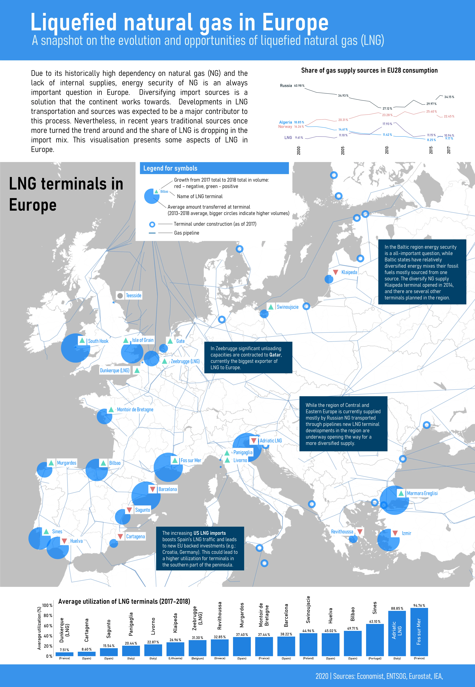
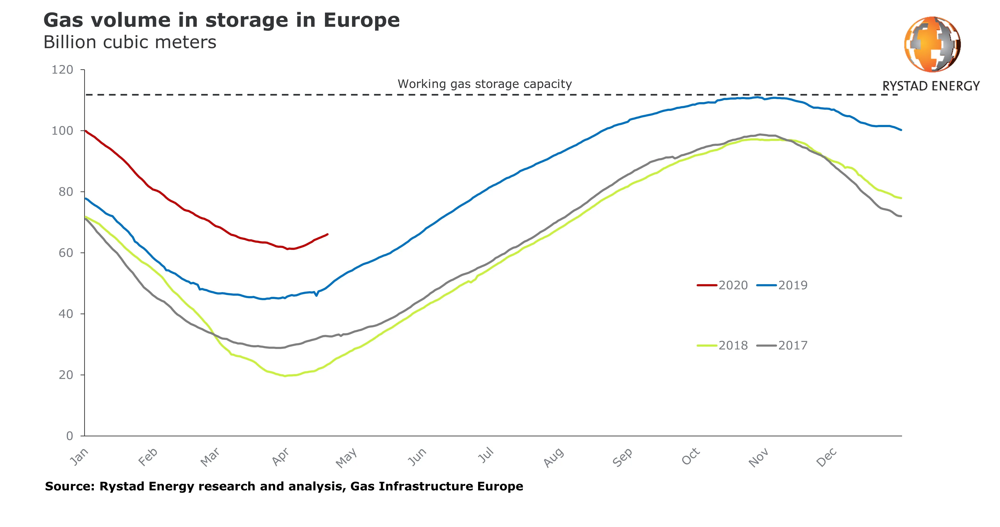
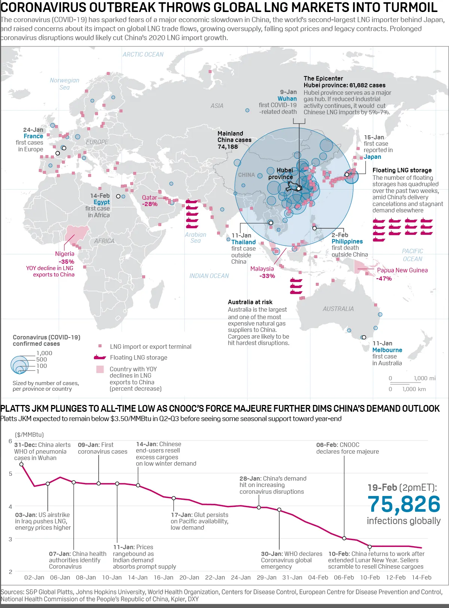

Snapshot of LNG in Europe
Originally published in May 2020 on Medium
Back in the early days of 2020 I made an infographic which presented some details of LNG (liquified natural gas) adaptation in Europe. A lot has changed since then. Now LNG could become an even more important part of our endeavor for energy security and clean energy. Or is it?

Full size image here
Alot has changed since then. With the COVID-19 pandemic hitting energy demand worldwide, LNG shipments originally destined to Asia have targeted Europe, but unloading is uncertain even here as prices plummet. It is likely that energy demand will rise again once the lockdown measures are over, but as the IEA notes: our energy industry may change significantly from what we were used to.
Against this backdrop some of my points here could be seen as outdated, but some of the important messages stay relevant: in the Baltic region energy security is still of utmost importance — LNG could still be an important part of the solution. The Mediterranean is still the “next frontier” in Europe, with support from the Commission and developments not just in Croatia, but also possibly in the Greek islands.

Gas volume in storage, Europe, Source: Rystad, Hellenic Shipping News
On the supply side the picture is more complicated now. Oversupply was a problem in the industry even before the pandemic hit. Prices are low and likely to stay low for a while. Qatar stays the biggest supplier to Europe (and globally), it now faces a tough choice — selling on lower prices (possibly negative prices even as we have seen in oil markets¹) to keep up demand or reducing their production OPEC style — both will have a serious impact on their revenues.
While in the US, where even the government has intervened to increase European demand, new prices could mean a threat to continuing operations, with new developments already put to hold (elsewhere too of course).
What stays is a fairly developed infrastructure in Europe — which as of now is running on high capacity (even if regasified LNG mostly ends up in storage) and lower prices for diversified gas sources — which helps in terms of energy security. Also gas is largely seen as a “bridging fuel” towards a low-carbon future, therefore in line with the Green Deal people say that this could be the momentum for strengthening LNG in Europe.
But the future is uncertain: on one hand these shocks to producers can bring about changes in the supply side of the market. And on the other — Europe might need less gas after all, if the coming recovery is used to transform its energy system to those energy sources which are already coming out as a winner of this crisis and which provides geographical energy security — renewables.

S&P’s excellent infographic on the impacts of COVID-19 on the global LNG market, Source: S&P Global Platts
¹ Something that has already happened in the US.